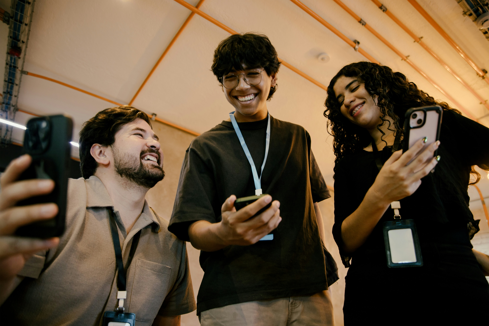

Work expectations
What young people want from work, culture, flexibility and progression.
Bridgework explores what young people expect from work, what employers need next, and where the real disconnects sit.

The question
What happens when employers and young people stop guessing?
We bring both sides into the same conversation, turning assumptions into insight and insight into action.
The gap
Young people are entering work with different expectations, pressures and ways of communicating. Bridgework helps organisations understand those shifts before the disconnect starts costing them talent.
Research themes
What young people want from work, culture, flexibility and progression.
Where employers see gaps, and where young people feel underprepared.
How online culture, content and social platforms shape career choices.
What makes an employer feel credible, human and worth applying to.
The purpose
Bridgework is designed to move beyond interesting findings. We turn lived experience into clear implications, practical recommendations and conversations that help employers make better decisions.
Listen directly to young people and employers without starting from assumptions.
Identify the patterns, tensions and opportunities behind what people tell us.
Translate insight into practical changes to strategy, content and experience.
Our commitment is to work only with organisations ready to turn insight into action. We'll partner with those willing to move beyond good intentions, take meaningful action and be honest about the outcomes.
Built with young people
Young talent will form the Bridgework Collective, a group helping to shape the questions, insights and outputs. Members will gain supported, practical experience across the full research journey, from design and storytelling through to recommendations and delivery.

Campaign planning, content creation, audience engagement and distribution.
Research design, interviews, focus groups, analysis and ethical practice.
Visual storytelling, report design, social assets and data communication.
Media storytelling, press materials, outreach and stakeholder communications.
Programming, logistics, audience experience and launch event delivery.
Participants will leave with practical experience, published work, stronger portfolios and access to professional networks.
Timeline
Finalise partners and form the young project group.
Project kickoff, theme confirmation and research design.
Participant recruitment, research preparation and quantitative survey design.
Interviews, focus groups and deeper exploration of lived experience.
Thematic analysis, interpretation and storytelling development.
Quantitative validation and testing of the emerging themes.
Recommendations, report development, design and launch preparation.
Research release and an industry event designed to connect, share and discuss.
Conference season, speaking engagements and wider insight sharing.
Organisation-specific workshops for teams ready to act on the findings.
Publishing the research is only part of the job. The real value comes from the conversations, decisions and changes that follow.
Beyond the report
The launch event
Employers, young people, educators and industry voices will come together to explore the findings, challenge assumptions and discuss what needs to change.

Industry sharing
Conference talks, delivery sessions and partner content will keep the findings visible throughout the summer event season.

Strategy workshops
Collaborative sessions will help teams identify the insights that matter most, challenge current assumptions and agree practical actions.
Partner options
You can read another generic NexGen report for free. Bridgework is the one where your questions get asked, your sector gets covered, and your team gets in the room with the people behind the answers.
One failed early careers hire costs more than any tier on this page.
£5,000 *
For organisations that want to support the project and be part of the conversation.
£10,000 *
For organisations that want deeper involvement and sector-relevant insight.
£20,000+ *
For one lead organisation that wants to champion the project and activate the findings.
Partners can help shape the questions and areas of focus. The research process and findings remain independent.
* Prices exclude VAT.

Founding Opportunity
The first organisation to join Bridgework at Research Partner level or above will become our Founding Research Partner.
This includes permanent recognition as the organisation that helped make the project possible, priority input into research themes and questions, and announcement alongside the project launch as a founding supporter of the initiative.
This opportunity is available to one organisation only.
Bridgework is a mixed-methods study running from September 2026 to May 2027.
The project begins with qualitative discovery through interviews and focus groups with young people and employers, before moving into quantitative validation of the emerging themes and findings.
Research is designed and delivered alongside a trained young project group, supported throughout by experienced researchers and practitioners.
All research activity follows established ethical standards, including informed consent, anonymity, safeguarding and responsible data handling at every stage.
HIYA creates employer brands, recruitment campaigns and social-first content that help organisations connect with talent in a way that feels human, not corporate.
Partner conversations are open
We're currently bringing together our founding partners and Bridgework Collective members ahead of the September 2026 kickoff. If you'd like to help shape the conversation around young people and the future of work, register your interest and let's explore what involvement could look like.
Email HIYA